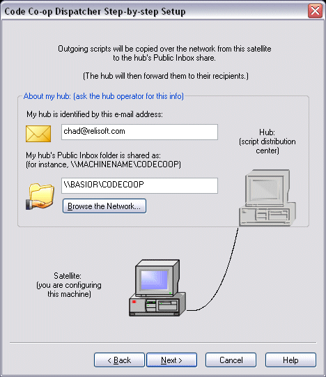

Configuring a Satellite
The satellite needs to know two things about the Hub:
- Hub's email address (even if the Hub doesn't actually use email)
- Network path (UMC name, for instance \\HUBMACHINE\CODECOOP), under which the Hub shares its public inbox (by default it's the directory c:\co-op\PublicInbox on the Hub's computer) You can browse the network to find the Hub machine and select its share. The share name is CODECOOP.

This concludes your satellite configuration.
If your Code Co-op has problems copying scripts on the LAN, see troubleshooting network connections.
< Back Next: Working with projects >